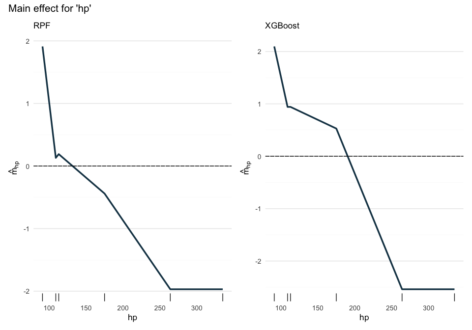

Global explanations for tree-based models by decomposing regression or
classification functions into the sum of main components and interaction components of arbitrary order. Calculates exact interventional SHAP values and q-interaction interventional SHAP (q being the highest order of interaction present in the model) for tree-based models such as XGBoost.
See the accompanying paper for more details and exact definitions: “Unifying local and global model explanations by functional decomposition of low dimensional structures” (arxiv, PMLR).
Installation
You can install the development version of glex from GitHub with:
# install.packages("pak")
pak::pak("PlantedML/glex")or from r-universe with
install.packages("glex", repos = "https://plantedml.r-universe.dev")What’s Included
Currently glex works with xgboost and randomPlantedForest models, so we’ll start by fitting a model with one of each:
# Install xgboost from CRAN
install.packages("xgboost")
# ... and randomPlantedForest from r-universe
install.packages("randomPlantedForest", repos = "https://plantedml.r-universe.dev")
library(glex)
# Model fitting
library(randomPlantedForest)
library(xgboost)
# Visualization
library(ggplot2)
library(patchwork)
theme_set(theme_glex())
set.seed(21)Note that xgboost, unlike randomPlantedForest, requires matrix input and does not support categorical predictors.
rp <- rpf(mpg ~ ., data = mtcars[1:26, ], max_interaction = 3)
x <- as.matrix(mtcars[, -1])
y <- mtcars$mpg
xg <- xgboost(data = x[1:26, ], label = y[1:26],
params = list(max_depth = 3, eta = .1),
nrounds = 30, verbose = 0)Using the model objects and a dataset to explain (such as a test set in this case), we can create glex objects for each of the model fits. These objects of class glex are a list containing the prediction components of main and interaction terms ($m), the dataset to be explained with the observed feature values ($x) used to visualize feature effects, and the average predicted value for the model ($intercept). The xgboost method additionally returns the SHAP values ($shap) for each feature in the model.
Both m and shap satisfy the property that their sums (per observation) together with the intercept are equal to the model prediction for each observation:
# Calculating sum of components and sum of SHAP values
sum_m_rpf <- rowSums(glex_rpf$m) + glex_rpf$intercept
sum_m_xgb <- rowSums(glex_xgb$m) + glex_xgb$intercept
sum_shap_xgb <- rowSums(glex_xgb$shap) + glex_xgb$intercept
# Model predictions
pred_rpf <- predict(rp, mtcars[27:32, ])[[1]]
pred_xgb <- predict(xg, x[27:32, ])
# For XGBoost
cbind(pred_xgb, sum_m_xgb, sum_shap_xgb)
#> pred_xgb sum_m_xgb sum_shap_xgb
#> [1,] 21.39075 21.39076 21.39076
#> [2,] 20.23664 20.23664 20.23664
#> [3,] 14.73895 14.73895 14.73895
#> [4,] 18.76170 18.76170 18.76170
#> [5,] 13.05614 13.05614 13.05614
#> [6,] 20.23664 20.23664 20.23664
# For RPF
cbind(pred_rpf, sum_m_rpf)
#> pred_rpf sum_m_rpf
#> [1,] 28.51040 28.51040
#> [2,] 26.00074 26.00074
#> [3,] 17.35199 17.35199
#> [4,] 19.57216 19.57216
#> [5,] 14.98252 14.98252
#> [6,] 23.90269 23.90269Variable Importances
Variable importance scores are calculated for each main and interaction term by calculating the average of the absolute prediction components (m) over the dataset supplied to glex().
vi_rpf <- glex_vi(glex_rpf)
vi_xgb <- glex_vi(glex_xgb)
vi_rpf[1:5, c("degree", "term", "m")]
#> degree term m
#> <int> <char> <num>
#> 1: 1 hp 1.6508213
#> 2: 1 disp 1.1314800
#> 3: 1 wt 0.9222168
#> 4: 1 drat 0.6066751
#> 5: 1 cyl 0.4174009
vi_xgb[1:5, c("degree", "term", "m")]
#> degree term m
#> <int> <char> <num>
#> 1: 1 hp 1.5980083
#> 2: 1 cyl 0.5762864
#> 3: 1 wt 0.5024355
#> 4: 1 qsec 0.2867502
#> 5: 2 cyl:hp 0.1098818The output additionally contains the degree of interaction, which can be used for filtering and aggregating. Here we filter for terms with contributions above a threshold of 0.05 to get a more compact plot, with terms below the threshold aggregated into one labelled “Remaining terms”:
p_vi1 <- autoplot(vi_rpf, threshold = .05) +
labs(title = NULL, subtitle = "RPF")
p_vi2 <- autoplot(vi_xgb, threshold = .05) +
labs(title = NULL, subtitle = "XGBoost")
p_vi1 + p_vi2 +
plot_annotation(title = "Variable importance scores by term")
We can also sum values within each degree of interaction for a more aggregated view, which can be useful as it allows us to judge interactions above a certain degree to not be particularly relevant for a given model.
p_vi1 <- autoplot(vi_rpf, by_degree = TRUE) +
labs(title = NULL, subtitle = "RPF")
p_vi2 <- autoplot(vi_xgb, by_degree = TRUE) +
labs(title = NULL, subtitle = "XGBoost")
p_vi1 + p_vi2 +
plot_annotation(title = "Variable importance scores by degree") 
Feature Effects
We can also plot prediction components against observed feature values, which admittedly produces more interesting output with larger, more interesting datasets.
p1 <- autoplot(glex_rpf, "hp") + labs(subtitle = "RPF")
p2 <- autoplot(glex_xgb, "hp") + labs(subtitle = "XGBoost")
p1 + p2 +
plot_annotation(title = "Main effect for 'hp'")
p1 <- autoplot(glex_rpf, c("hp", "wt")) + labs(subtitle = "RPF")
p2 <- autoplot(glex_xgb, c("hp", "wt")) + labs(subtitle = "XGBoost")
p1 + p2 +
plot_annotation(title = "Two-way effects for 'hp' and 'wt'")
Currently there is support for plots of interactions up to the third degree, including continuous and categorical features. Unfortunately, three-way interactions of continuous features are not supported yet.
Note that these main effect plots correspond to PDP plots, where the latter are merely the main effect plus the intercept term:
plot_pdp(glex_rpf, "hp")Decomposition of Individual Predictions
Finally, we can explore the prediction for a single observation by displaying its individual prediction components. The SHAP value is the sum of all of these components and serves as a reference value. For compactness, we only plot one feature and collapse all interaction terms above the second degree into one as their combined effect is very small.
p1 <- glex_explain(glex_rpf, id = 2, predictors = "hp", max_interaction = 2) +
labs(tag = "RPF")
p2 <- glex_explain(glex_xgb, id = 2, predictors = "hp", max_interaction = 2) +
labs(tag = "XGBoost")
p1 + p2 & theme(plot.tag.position = "bottom")